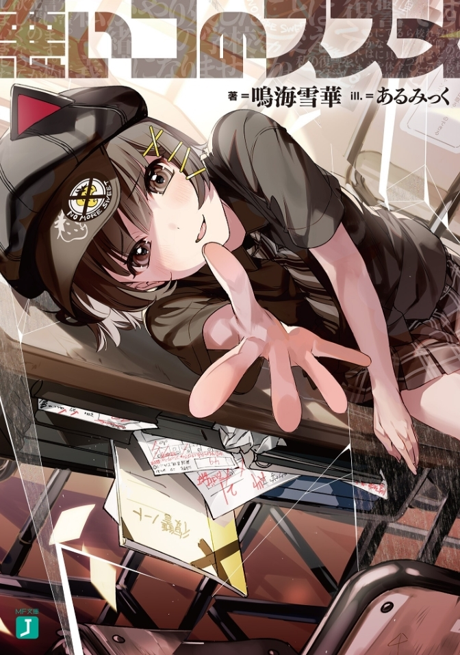

Warui Ko no Susume
Novel Info's
Status: Ongoing
Genre: Comedy, Drama, Romance
Author: Narumi Setsuka
Illustrator: ALmic
Volumes: 2
Original Publisher: Kadokawa, MF Bunko J
English Publisher: N/A
Fan Translation: CClaw Translation
Description/Sypnosis
“Senpai, won’t you help me get revenge on this school?”
Abuse, mistreatment, and discrimination based on academic abilities. Twisted values rule over this preparatory high school with no hope in sight. But one day, a mysterious girl appears to offer me her hand, possessing a mischievous smile, and hiding her dyed silver-gray inner hair from the school—Her name? Hoshimiya Kurumi.
“I’m going to drop out of this school. But, I don’t want to spend the rest of my time just running away…So, Senpai? Let’s destroy this school together?”
Unable to decline, I have no other choice but to assist in her ploy, as we spend our days plotting our revenge, preparing to start our act of terrorism. Spitting in the face of the school’s prohibition of relationships, we bring our guilt together, our lips pressed on the other’s, as we revel in this feeling of guilty pleasure.
“Senpai, don’t you think that a kiss is a proper way of rebelling against these regulations?”
This is our—the mischievous youngsters’—act of revenge as we cast aside common sense and hopes of a bright student life…All to start a fight to end the adults’ tyranny.
Download Links
Epub & Pdf